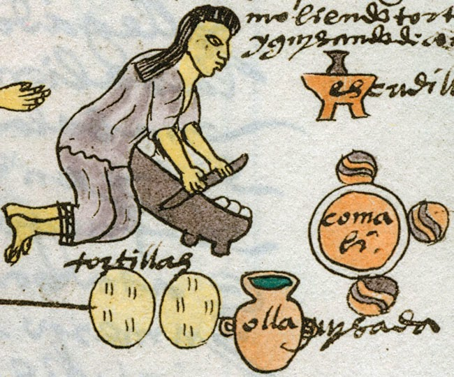
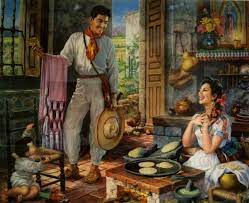
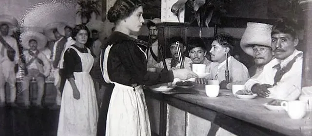
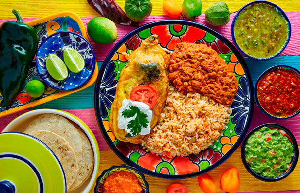

La cocina mexicana Como cualquier civilización, la base cultural de un país está estrechamente relacionada con su ubicación. México no es la excepción, la historia gastronómica de México tiene relación con su situación geográfica. La extensión territorial de nuestro país abarca largas costas en el Pacífico, en el Atlántico y el Caribe, posee también amplias llanuras, costas tropicales, serranías, altiplanos con clima templado, lagos y lagunas además de desiertos y selvas tropicales. La gran variedad de terrenos fértiles proporcionan una interesante mezcla de productos frescos y propician el desarrollo de flora y fauna que se han aprovechado para integrarse a las cocinas del país y a la dieta de los mexicanos. Este país es afortunado, y en él se pueden encontrar una gran variedad de frutas frescas, verduras, pescados y mariscos y carne de gran calidad.
La cocina mexicana contemporánea es el resultado de una larga y rica historia que se ha construido a partir de la fusión de diversas culturas, ingredientes y tradiciones. La base de la gastronomía mexicana inició en la época prehispánica con el desarrollo de culturas como la Mexica, Zapoteca, Maya y Mixteca. Su dieta alimenticia se basaba en cuatro productos: maíz, frijol, chile y calabaza. Estos ingredientes, hasta el día de hoy siguen siendo la base en muchos platillos de comida mexicana. Pero la famosa gastronomía mexicana que conocemos hoy en día dista un poco de la gastronomía “prehispánica” esto gracias a la influencia e introducción de diversos ingredientes que hoy forman parte fundamental de la cocina mexicana. Con la llegada de los españoles durante la etapa virreinal, se introdujeron al país una gran variedad de alimentos y técnicas de cocina europea que modificarían en gran medida la gastronomía del país. La cocina española de aquellos tiempos ya era una mezcla de ingredientes debido a la conquista musulmana. Ingredientes como el arroz (un alimento básico de la gastronomía mexicana) provienen directamente de los árabes, así como la canela y la nuez moscada, pero fueron traídos por los españoles a nuestras tierras. La influencia de la cocina árabe, por ejemplo, se puede apreciar en el uso de la canela, el arroz y los dulces de almendra. Posteriormente, la etapa conventual, entre los siglos XVI y XVII, fue también muy importante para el desarrollo de la gastronomía mexicana, especialmente en la ciudad de Puebla, donde las monjas crearon platos emblemáticos como el mole poblano, el chile en nogada, los buñuelos y el camote. En el siglo XIX, la cocina mexicana se vio influenciada por la gastronomía francesa, que tuvo un gran impacto en el mundo después de la Revolución Francesa. El surgimiento de los restaurantes, los chefs y la literatura gastronómica francesa llegaron a México gracias a la afinidad del presidente Porfirio Díaz con todo lo relacionado con Francia. Así, se incorporaron elementos como el pan, el queso, el vino y las salsas a la cocina mexicana. Hoy en día, la cocina mexicana sigue evolucionando y fusionándose con otras cocinas del mundo, eso sí, manteniendo su esencia y su diversidad.
¿Existe realmente un solo platillo que defina la cocina mexicana? La respuesta es un rotundo no. La gastronomía mexicana es tan extensa como nuestro país y como tal, podemos encontrar decenas de platillos típicos, algunos contemporáneos y otros fueron creados hace más de 700 años. Pero, ¿son realmente diferentes los platillos de hoy en día como lo eran originalmente? ¿Cuál ha sido la evolución de los platillos típicos de la gastronomía mexicana?
La tortilla, los tlacoyos, tamales, pozole, quesadillas de hongos, insectos, flor de calabaza... son algunos de los platillos típicos de la gastronomía mexicana prehispánica. El maíz también se comía como elotes en mazorca tierna o elotes asados. Nada se desperdiciaba, incluso las hojas de la mazorca se usaban para envolver los tamales y los cabellos de la mazorca para hacer infusiones y aliviar dolores del riñón. El huitlacoche, un hongo que crece en las mazorcas, es otro alimento considerado un manjar de la gastronomía mexicana. Las verduras y las frutas también figuraban en la cocina prehispánica. La calabaza, el guiso de verdolaga y hongos son platillos que aún hoy en día forman parte de la dieta mexicana.
Los tacos son probablemente uno de los platillos más representativos de México y existen desde hace siglos. El nacimiento del taco proviene de las tortillas con mole prehispánicas, que eran preparadas sobre piedras calientes y decoradas con cochinilla, algunas de ellas acompañadas de frijol y chile, ingredientes que todavía constituyen la base alimenticia del pueblo mexicano. El guiso que se le ponía en ese entonces al taco, se basaba en la carne de guajolote que se consumía durante esa época. El primer registro histórico conocido de una taquiza es el de la realizada por Hernán Cortés y sus hombres en Coyoacán, 1415 para celebrar la caída de México-Tenochtitlan, y fue documentada por Díaz del Castillo en el Códice Florentino.
La Colonia o el Virreinato en México fue un periodo en que la gastronomía mexicana tuvo un cambio radical. El comercio, la exportación y migración de europeos y africanos permitió que se incorporara a la gastronomía mexicana alimentos nunca antes vistos en América como el arroz, el trigo, la avena, el aceite de oliva, el ajo, orégano, cebollas, cilantro, canela, clavo y un largo etcétera. Del mismo modo, en este periodo se introdujeron nuevos animales domesticados como los cerdos, vacas, pollos, cabras y ovejas para producir carne y leche. El queso se convirtió en un producto muy importante. ¿Te imaginas una quesadilla sin queso?
La Independencia de México provocó un cambio importante en la economía del país. La res dejó de ser un alimento básico debido a su alto precio y la alimentación de la población consistió en frijoles, maíz, tortilla, verduras, frutas, insectos y una gran variedad de chiles. Luego, durante el Porfiriato, se estableció un gusto general por la comida francesa en las clases altas de la sociedad. Se empezaron a imitar recetas francesas incorporando ingredientes nativos de México. Durante este periodo, extranjeros especializados en alta cocina francesa llegaron a México con recetarios y nuevas técnicas de cocina. La característica principal de la comida de una clase social alta era la abundancia. Pero la comida no era la misma para todos. Los indígenas seguían consumiendo frijoles, chile, calabazas y tortillas y una vez por semana consumían algún guisado con carne. En las zonas rurales fue en donde surgió la verdadera comida tradicional mexicana debido a que las posibilidades para conseguir productos fuera de su lugar de origen era casi imposible. Los postres también destacaron en esta época. La mayoría se preparaba con harina, manteca y huevos. Algunos ejemplos son las cocadas, las frutas cubiertas, el zapote con canela y vino y xoconostles rellenos de coco.
El inicio de La Revolución Mexicana en 1910 es uno de los acontecimientos políticos y sociales más importantes del siglo XX en México y como era de esperarse tiene un impacto en la gastronomía mexicana. En el Siglo XX surgen las siguientes costumbres del ambulantaje gastronómico mexicano: venta de tamales en las esquinas, venta de panes en bicicleta, carritos con camotes, venta de antojitos en la calle, puestos de jugos y fruta de temporada. Estas costumbres siguen siendo parte del día a día y la cultura del mexicano. Gracias a esta nueva costumbre de ambulantaje, los tacos al pastor se posicionaron como uno de los alimentos favoritos de los mexicanos. Fue gracias a los migrantes libaneses que trajeron consigo su tradicional shawarma, un platillo que consiste en carne de cordero asada en un trompo vertical, servida en pan árabe con vinagre y especias . Con el tiempo, esta receta se fue adaptando al gusto y a los ingredientes locales. La carne de cordero se sustituyó por cerdo, el vinagre y las especias se reemplazaron por chile y achiote, y el pan árabe se cambió por la doble tortilla de maíz. Además, se le agrega cebolla, cilantro, piña y salsa, para darle más sabor y color . Los tacos al pastor se conocen así en la Ciudad de México, pero en otras partes del país reciben otros nombres. En el norte se les dice "tacos de trompo", por la forma en que se prepara la carne, y en el sureste se les llama "tacos de adobada", por la salsa con la que se marina la carne. Los tacos al pastor son una delicia que ha trascendido fronteras y que ha sido reconocida como una de las mejores comidas del mundo.
La gastronomía mexicana nunca ha dejado de evolucionar y reinventarse, la cocina mexicana contemporánea es el resultado de la fusión de las tradiciones culinarias indígenas, europeas, africanas y asiáticas, que se han ido adaptando y transformando a lo largo de los siglos. La gastronomía mexicana contemporánea no se limita a los platillos típicos que se conocen en el mundo, como los tacos, los burritos o el mole, sino que abarca una gran variedad de sabores, ingredientes, técnicas y presentaciones que reflejan la creatividad y la innovación de los chefs mexicanos. En muchos casos, las recetas clásicas se interpretan fuera de los cánones culinarios establecidos, buscando una modernidad o una combinación de sabores nueva a partir de la cocina mexicana clásica. De esta forma comienzan a aparecer escuelas de gastronomía incluyendo en sus temarios estudios de la cocina mexicana. La cocina mexicana se reconoce como una de las más complejas del mundo. La cocina mexicana sigue evolucionando y con ello podemos descubrir nuevos platillos y sabores. ¡Quien sabe lo que podremos probar en el futuro de la gastronomía mexicana!
